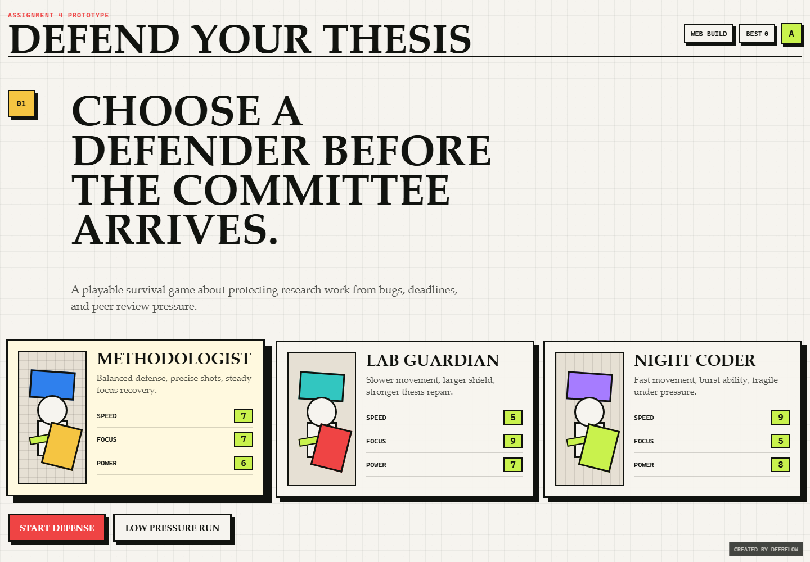
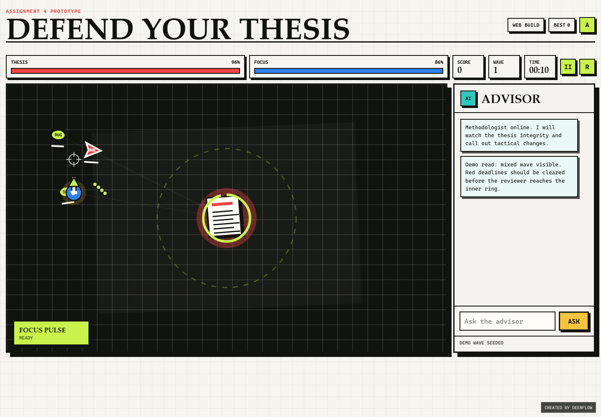

Assignment 4 Report: Defend Your Thesis
Student: Zhan Yibo
Student ID: ZY2557213
Course: Fundamentals of Software Technology
Project Option: Option A, "Defend Your Thesis"
Demo URL: https://zyibo834-ai.github.io/my-blog/assignment4/
Final Website Version: English browser game hosted inside my existing GitHub Pages site
Local Entry: index.html
1. Background & Design
This project develops the in-class "Defend Your Thesis" idea into a stable, playable web game. The player controls a student defender and protects a central thesis document from academic threats such as bugs, deadlines, peer reviewers, committee pressure, and a final defense chair.
I chose Option A because it allowed me to turn a chaotic classroom prompt into a complete interactive application with real game rules, user controls, scoring, difficulty progression, and a clear academic theme. The final design is not only a simple survival game. It adds color-based monster rewards, stronger character identities, an endless mode, sound effects, and a final boss fight so the gameplay feels more energetic and complete.
The game uses a paper-grid academic visual style mixed with arcade-style combat feedback. The central thesis is always visible, so the player understands the main objective immediately: survive, defend, and clear threats before the thesis integrity reaches zero.
2. Final Game Overview
The final version includes three playable defenders:
- Method Student: balanced and precise. This character is best for steady shooting and controlling important threats with Method Lock.
- Lab Guardian: slower but more defensive. This character can protect the thesis with shields, repairs, and turret-style defensive play.
- Night Coder: fast and aggressive. This character has high speed and burst damage, but less safety if the player leaves the thesis undefended.
The main game modes are:
- Defense Mode: standard mode with wave progression and a final boss.
- Practice Mode: a lighter mode for learning the controls and mechanics.
- Endless Mode: a survival mode with no final boss. The goal is to survive as long as possible and chase a higher score.
The enemies include regular bugs, fast deadlines, tougher peer reviewers, committee mini-boss pressure, and the final boss. Some monsters have colored auras. Defeating these monsters gives temporary boosts, such as Machine Gun fire rate, Area Blast damage, Scatter shots, Shield protection, and Freeze control. This system makes target priority more interesting because the player is rewarded for hunting special colored threats.
3. Tech Stack
| Category | Choice |
|---|---|
| Hardware | Standard Windows laptop/desktop |
| Development OS | Windows with PowerShell |
| Runtime Target | Modern web browser: Chrome, Edge, Firefox, Safari |
| Languages | HTML, CSS, JavaScript |
| Rendering | HTML5 Canvas |
| App Type | Static website and PWA-style browser app |
| Hosting | GitHub Pages |
| AI Models/Tools | GPT-5/Codex as the primary LLM development partner |
The application does not require a backend server. It is hosted as a static website, which satisfies the assignment requirement for a stable URL. The game also includes manifest.webmanifest and sw.js, so it can behave like an installable web app when served over HTTP/HTTPS.
4. Functional Requirements
| Requirement | Implementation |
|---|---|
| Functional software | The game runs from the GitHub Pages URL and from local index.html. |
| Character selection | Three playable defenders with different strengths, movement, abilities, and play styles. |
| Game over and score logic | Score, kills, wave, timer, thesis integrity, victory/defeat state, high score, and game-over modal are implemented. |
| Keyboard and mouse controls | WASD/arrow movement, mouse/touch aiming, shooting, pause, restart, and special ability controls are implemented. |
| Stable URL | The game is hosted at https://zyibo834-ai.github.io/my-blog/assignment4/. |
| AI-assisted documentation | This report explains architecture, implementation, debugging, and how AI suggestions were verified. |
5. Bonus Features
Integrated AI Agent (+3)
The game includes an in-game Defense Advisor panel. It gives short tactical messages based on the current game state, such as low thesis integrity, low Focus, deadline clusters, boss phases, or dangerous reviewer pressure.
The player can also type questions into the Advisor panel. The Advisor answers questions about:
- boss strategy
- colored boosts
- score
- deadlines
- reviewers
- Focus and abilities
- thesis integrity
- character strategy
The Advisor is implemented as an offline rule-based agent. This makes it reliable during presentation because it does not need an API key, paid model call, or internet connection during gameplay.
Cross-Platform Support (+2)
The final application is a browser game hosted on GitHub Pages. It works on Windows, macOS, Linux, and mobile browsers. Because it uses standard HTML, CSS, JavaScript, Canvas, a web manifest, and a service worker, the same application can be opened on multiple operating systems without installing a separate desktop program.
6. Development Log
6.1 Architecture Planning With AI
Prompt summary:
Help me complete Assignment 4. Build a playable "Defend Your Thesis" game with character selection, score/game-over logic, controls, and documentation.AI-assisted decisions:
- Use a static HTML/CSS/JavaScript structure to avoid complicated installation.
- Use Canvas for the real-time 2D game area.
- Separate the project into
index.html,styles.css, andgame.js. - Use GitHub Pages as the stable hosted URL.
- Add a web manifest and service worker for PWA-style support.
This architecture worked well because the assignment allows either an executable application or a stable hosted web service. A static website is easy to host, easy to test, and cross-platform by default.
6.2 Core Gameplay Implementation
Prompt summary:
Implement the Canvas game loop, player movement, aiming, shooting, enemies, collision detection, waves, score, and game over.Implemented systems:
requestAnimationFramegame loop.- Player movement using WASD and arrow keys.
- Mouse/touch aiming and shooting.
- Enemy spawning from screen edges.
- Circle-based collision detection.
- Thesis integrity and Focus meters.
- Score, kills, timer, wave number, and high score.
- Pause, restart, victory, and defeat states.
Important code areas:
- Player and shooting logic:
updatePlayer()andfireProjectile()ingame.js. - Enemy behavior:
spawnEnemy()andupdateEnemies()ingame.js. - Collision and score logic:
updateProjectiles()andkillEnemy()ingame.js. - Game-over and victory logic:
endGame()ingame.js.
6.3 Gameplay Improvements After Testing
After playing the early version, I felt that the game was not exciting enough. I used AI as a brainstorming partner and then implemented a more arcade-like reward system.
Major improvements:
- Added colored monsters that drop temporary boosts.
- Added Machine Gun, Area Blast, Scatter, Shield, and Freeze effects.
- Removed the earlier random card-draw idea because it interrupted the action.
- Made the three characters more different from each other.
- Added stronger hit sounds, explosions, and power-up sounds.
- Added a final boss with multiple pressure phases.
- Added Endless Mode with no final boss for replay value.
This changed the project from a basic class prototype into a more complete game loop: identify dangerous threats, kill colored enemies for rewards, survive boss pressure, and improve the final score.
6.4 Debugging With AI
Several problems appeared during testing, and AI helped identify likely causes and fix them:
- Initial view was too small: the game canvas and responsive sizing were adjusted so the starting view shows the arena properly.
- Movement sometimes failed: keyboard input handling was improved so WASD and arrow keys work more reliably.
- Website version had an up/down movement bug: the final fix changed keyboard listeners to use document-level capture, prevented browser scrolling from taking over arrow keys, and cleared input state when the window loses focus or the tab becomes hidden.
- Sound effects were too quiet: sound gain values were increased and more impact sounds were added.
- Boss was too easy: boss health, summons, pressure phases, and attack behavior were strengthened through several rounds of playtesting.
- Automatic tracking bullets felt too overpowered: the player attack behavior was adjusted so the game felt less automatic and required more active control.
These debugging steps show the difference between asking AI for code and engineering a working result. Each AI suggestion had to be tested in the actual game and adjusted based on real gameplay.
6.5 Handling AI Hallucinations and Bad Assumptions
AI suggestions were useful but not always correct. I handled these issues by checking the application after each change.
Examples:
- AI initially suggested features that were too complex or not fun, such as random card-draw upgrades. After testing, I removed that direction and replaced it with direct colored monster boosts.
- Some generated text became mixed Chinese/English or corrupted after translation. I scanned the files, fixed the visible text, and verified that the English version had no remaining Chinese UI text.
- AI suggested stronger mechanics that made the three characters overpowered. I reduced the strongest effects so each character still had strengths and weaknesses.
- Keyboard controls worked locally but still had issues on the website because browser scrolling can capture up/down arrow keys. The final solution had to account for real browser behavior, not just game logic.
7. Results
The final project includes:
- A complete English character selection page.
- A playable Canvas survival-defense game.
- Three distinct character play styles.
- Colored monster boost rewards.
- Strong final boss and victory condition.
- Endless mode without a final boss.
- Score, wave, timer, thesis integrity, Focus, high score, pause, restart, and game-over UI.
- Integrated AI Advisor panel.
- Stronger sound effects for better game feel.
- GitHub Pages deployment.
- Cross-platform browser support.
Demo URL
https://zyibo834-ai.github.io/my-blog/assignment4/Screenshot 1: Character Selection

Screenshot 2: Gameplay

8. How to Run
Open the hosted website:
https://zyibo834-ai.github.io/my-blog/assignment4/Or run locally:
python -m http.server 8765Then visit:
http://localhost:8765Controls:
- Move:
WASDor arrow keys - Aim: mouse/touch pointer
- Shoot: hold mouse/touch or press
Space - Special ability:
Eor the ability button - Pause:
Por the pause button - Restart: restart button in the HUD
9. Conclusion
This project demonstrates how LLMs can support software development beyond simple prompting. AI helped plan the architecture, implement the first playable version, debug movement and display issues, improve game feel, translate the game into English, and update the documentation. The final result is a stable hosted web game that meets the assignment requirements and includes both bonus challenges: an integrated Advisor and cross-platform browser support.